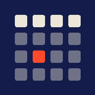
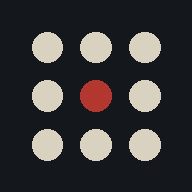
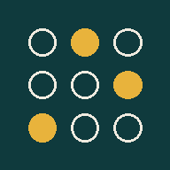

Artefacts
Mini-applications autonomes · installables · hors ligne

Doomsday Calcul mental du jour de la semaine → 02
Undercover Trouver qui n'a pas le même mot → 03
Affectation Classement secret, attribution optimale →